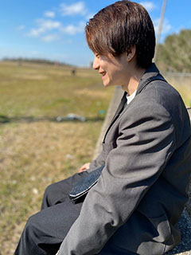

01
1,000万円売上に貢献
X / LAUNCH
Xローンチ
Xローンチにて、1,000万円の売上に貢献。
1,000万円売上に貢献
Xローンチにて、1,000万円の売上に貢献。
500万円売上に貢献
Instagramローンチにて、500万円の売上に貢献。
150名 / 月個別相談へ誘導
月150名規模の個別相談誘導を支援。
1位ジャンル別ランキング
Brainコンテンツ販売で、ジャンル別1位を獲得。
1,100名超 / 月セミナーへ誘導
月1,100名超のセミナー誘導を達成。
教材制作高単価コンテンツ
複数の高単価コンテンツの作成経験。

2020年3月に大学を卒業し、4月より地元静岡のIT企業に入社。HP制作やツールを使った業務効率化などの業務に従事しました。
2022年2月に退職後、フリーランスとして活動を開始。SNSマーケティングや動画編集事業に携わり、SNS運用、公式LINE運用、メルマガ運用、コンテンツ制作、導線設計などを中心に支援しています。
趣味は、スポーツ観戦やビール、漫画を読むことです。
今年の目標は、できるだけ多くのグルメを楽しむこと。美味しい食べ物を巡ることに夢中になっています。
Xを中心に、投稿企画・ライティング・数値確認・改善提案まで対応します。投稿単体ではなく、LINE登録やセミナー誘導など、次の行動につながる運用を意識しています。
LINE登録後のあいさつメッセージ、ステップ配信、教育配信、セミナー誘導、個別相談誘導まで対応します。登録して終わりではなく、申込や相談につながる流れを設計します。
講座、スクール、コンテンツ販売などにおける教材制作をサポートします。ユーザーの悩みや理解度に合わせて、学びやすく、行動につながるコンテンツ構成・文章作成を行います。
次の一歩を、
一緒につくりませんか。